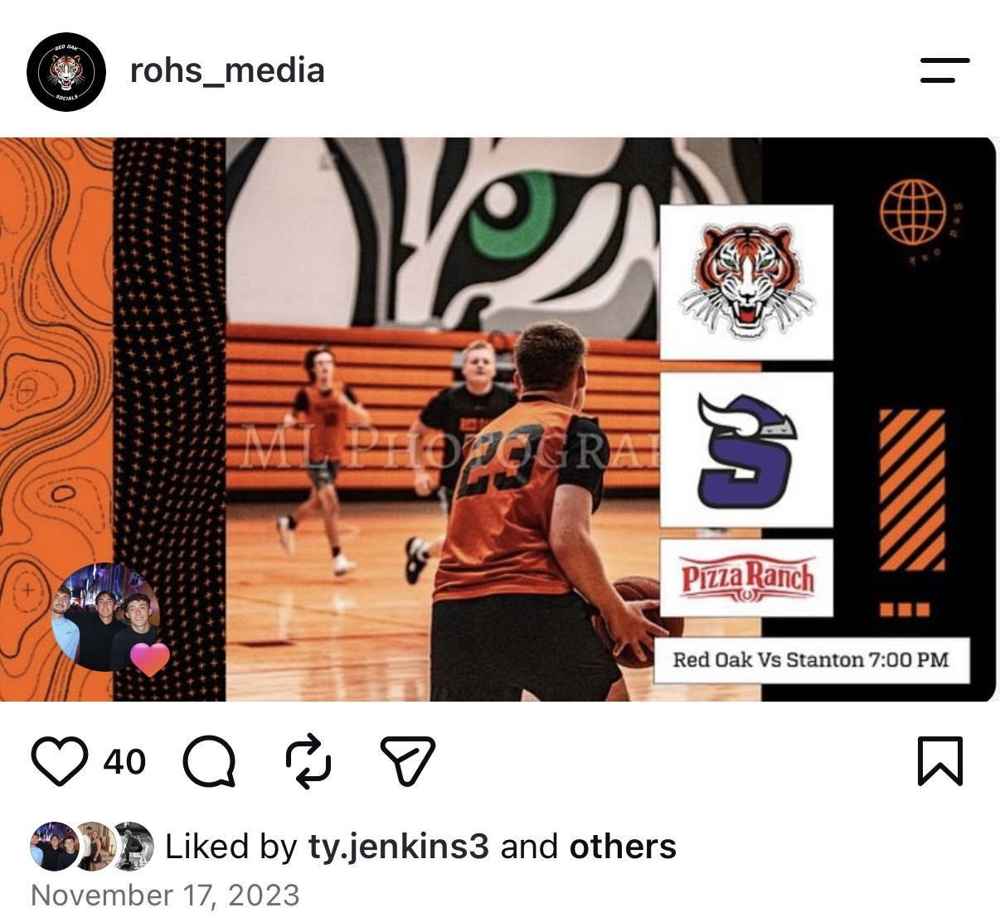

Multi-Page Web Portfolio Architecture
A game-day graphic for Red Oak High School’s athletics media account, promoting a boys basketball matchup against Stanton. It pairs an action photo with team logos, game time and a sponsor spot in a bold orange-and-black layout.
